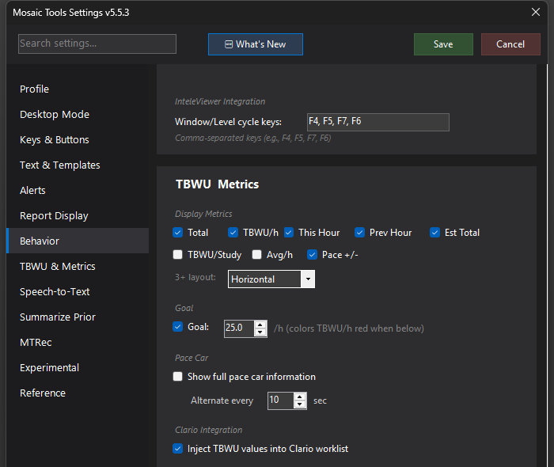

TBWU Counter
Live TBWU productivity metrics on the widget bar — total, per-hour, pace, and goal tracking — pulled from your local RADCounter database, with optional injection of live TBWU values into the Clario worklist.


What it does
Reads your shift's TBWU data from the local RADCounter (RVUCounter) SQLite database and shows it live on the MosaicTools bar. You choose which metrics appear: Total, TBWU/h, This Hour, Prev Hour, Est Total, TBWU/Study, Avg/h, and Pace +/- (e.g. "+2.1 ahead"). It can also replace Clario's broken TBWU column with live values.
How to turn it on / set it up
- Open Settings → TBWU & Metrics.
- Under Database, click Find to auto-detect the RADCounter database, or ... to browse to it. RADCounter must be installed for any of this to work.
- Under Display Metrics, check the metrics you want on the bar. With 3+ metrics selected, the 3+ layout: dropdown controls presentation: Horizontal, Vertical Stack, Hover Popup, or Carousel (cycles every 4s).
- Optional: check Goal: and set a per-hour target — TBWU/h turns red on the bar when you fall below it.
- Optional: check Show full pace car information under Pace Car — the display alternates between your TBWU metrics and a pace comparison every few seconds (Alternate every N sec, 3–30).
- Optional: check Inject TBWU values into Clario worklist under Clario Integration to overwrite Clario's TBWU display with live RADCounter values (requires Clario CDP). Since 5.5.25 the injected strip uses the same colors as the MosaicTools bar: green when ahead of pace, red when behind, and the /h rate turns red when below your per-hour goal.
Using it
The bar shows your selected metrics next to the "TBWU" label and updates continuously through the shift. In Hover Popup or Vertical Stack layouts, secondary metrics live in a small popup/drawer that matches the bar styling. Pace +/- tells you at a glance whether you're ahead of or behind your goal pace.
Tips & gotchas
- User-facing branding is TBWU everywhere (the RVU→TBWU rename); internally and on disk the tool still reads RVUCounter's
rvu_data.db. - Est Total projects your end-of-shift total from your current rate — useful early in a shift, noisy in the first hour.
- If metrics stop updating mid-shift, check that RADCounter is still running and has an active shift; MosaicTools only reads the database, it doesn't count studies itself.